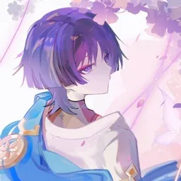
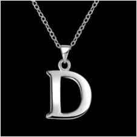
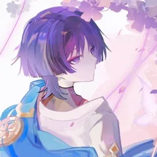
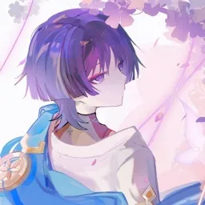
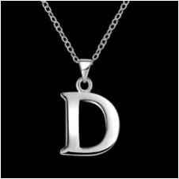
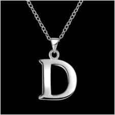

- app icons
- pack icons
- goat
- lib icons
- website icons
- EraCloud icons/images
- miscellaneous icons
- especial-themes
- TeamEra / helpers profile pictures




 old icon")


 - icon")
 - fileExplorer icon")


 - github page banner")


")
")


")
")
")
")
")
")
")
") 



 


")